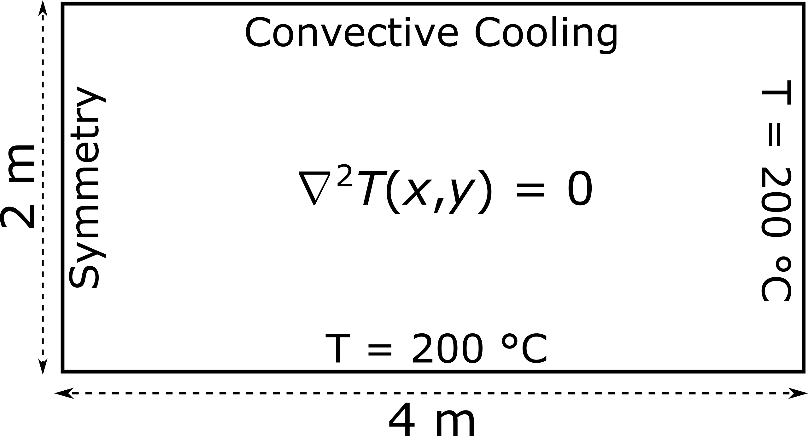

In the following example, we address a stationary heat transfer problem within a 2D rectangular domain. This is a typical cooling fin problem. Cooling fins are commonly used to increase the area available for heat transfer between metal walls and poorly conducting fluids such as air.
The steady heat conduction is described by the Laplace equation: \(\nabla^{2}T(x,y) = 0\), where \(T\) signifies the temperature values.

The above schematic illustrates the problem domain and outlines the associated boundary conditions. The constant temperature boundary conditions are implemented as Dirichlet types in the finite element code. The symmetry boundary condition is implemented as a Neumann zero-flux type (\( \frac{dT}{dx}=0\) ), while the convective cooling boundary condition is of the Robin type. Specifically, the latter is expressed as \( \frac{dT}{dy}=-h(T-T_0)\), where \(h\) is the heat transfer coefficient (\(h\) = 1 m-1) and \(T_0\) is the external temperature (\(T_0\) = 20 °C).
A demonstration is provided below on how to utilize the FEAScript library for addressing the above stationary heat transfer problem in your responsive web project. Initially the following libraries should be included in the head element using CDN: Math.js and Plotly.js.
<head>
. . .
<script src="https://cdnjs.cloudflare.com/ajax/libs/mathjs/5.0.0/math.min.js"></script>
<script src="https://cdnjs.cloudflare.com/ajax/libs/plotly.js/2.27.0/plotly.min.js"></script>
. . .
</head>
Following this, various problem parameters, such as the number of elements, domain boundaries, and boundary conditions, are defined using external JSON files. The first JSON file, meshConfig.json, is the computational mesh configuration file:
{
"numElementsX": 8,
"numElementsY": 4,
"maxX": 4,
"maxY": 2
}
In this example, the parameters nex and ney represent the number of elements along the x-axis and y-axis, respectively. Additionally, maxX and maxY denote the final x-coordinate and y-coordinate of the mesh, respectively. The second essential JSON file, boundaryConditions.json, is the boundary conditions configuration file. Boundary conditions can be specified as Dirichlet, Robin, or Neumann types. The Dirichlet condition sets a constant temperature value, while the Robin condition describes a convective heat transfer scenario, allowing users to define a custom heat transfer coefficient and an external temperature. The Neumann boundary condition represents a zero-flux type. The boundary conditions configuration file is structured as follows:
{
"topBoundary": ["robin", "placeholder"],
"bottomBoundary": ["dirichlet", 200.0],
"leftBoundary": ["neumann", "placeholder"],
"rightBoundary": ["dirichlet", 200.0],
"robinHeatTranfCoeff": 1,
"robinExtTemp": 20
}
In the provided example, the second argument for a Dirichlet boundary condition corresponds to the constant temperature value. For a Robin boundary condition, the parameter robinHeatTranfCoeff represents the heat transfer coefficient, and robinExtTemp indicates the external temperature. The above JSON files are fetched using the following script:
<body>
. . .
<script
let meshConfig, boundaryConditions;
// Function to fetch and parse JSON files
function fetchJSON(url) {
return fetch(url).then((response) => response.json());
}
// Fetch all JSON files asynchronously
Promise.all([
fetchJSON("./meshConfig.json"), // Computational mesh configuration file
fetchJSON("./boundaryConditions.json"), // Boundary conditions configuration file
]).then(([meshConfigData, boundaryConditionsData]) => {
meshConfig = meshConfigData;
boundaryConditions = boundaryConditionsData;
});
</script>
. . .
</body>
Subsequently, the solidHeatScript solver, a module of the FEAScript library, is utilized. This solver implements the Finite Element Method for heat conduction problems. The solver accepts the number of elements, domain dimensions, and boundary conditions as inputs and returns the grid points (nodeXCoordinates, nodeYCoordinates) and the solution vector (solutionVector) as outputs. The following script demonstrates these steps:
<body>
. . .
<script type="module">
// Import the FEAScript library
import { FEAScript } from 'https://feascript.github.io/FEAScript/src/index.js';
import { plotSolution2D } from 'https://feascript.github.io/FEAScript/src/index.js';
import { chkSolidHeatboundaryConditions } from 'https://feascript.github.io/FEAScript/src/index.js';
import { CFDScriptVersion } from 'https://feascript.github.io/FEAScript/src/index.js';
window.addEventListener("DOMContentLoaded", (event) => {
CFDScriptVersion(); // Print FEAScript version
let {
solutionVector,
numNodesX,
numNodesY,
nodeXCoordinates,
nodeYCoordinates,
} = FEAScript("solidHeatScript", meshConfig, boundaryConditions); // Assembly matrices and solve the system of equations
plotSolution2D(
// Visualise the solution
solutionVector,
numNodesX,
numNodesY,
nodeXCoordinates,
nodeYCoordinates
);
});
</script>
. . .
</body>
To display the plotted results, an HTML container element is also required on the page.
<body>
. . .
<div id="plot"></div>
. . .
</body>
Finally, the solution is calculated in real-time directly in your browser and the results are visualized in the contour plot. Below you can see the results of the heat transfer problem for a mesh of 24 two-dimensional quadratic elements, arranged as 8 in the x-direction and 4 in the y-direction.